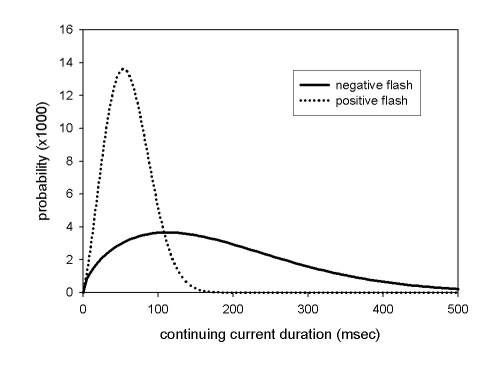

|
|
Lightning Strike Type |
Lightning strike type is the type of lightning discharge (polarity). It can be
|
I/O |
Module |
If |
Notes |
| Input | IGNITE | For probability of ignition by lightning | |
| Output | None |
The characteristic of lightning responsible for ignition of ground fuel is the presence and duration of a continuing current, which varies by Lightning Strike Type. The presence or duration of a continuing current is not detected by the current operational lightning detection network.
About 10-25% of all cloud-to-ground flashes are positive. Their physical origins are poorly understood. About 90 percent of all positive cloud-to-ground flashes have a continuing current, but the duration of the continuing current is less than for negative flashes (see Figure below). Positive flashes are usually a single stroke, and typically occur in the dissipating stage of a thunderstorm. The naked eye cannot discern a positive from negative flash.
About 75-90% of all cloud-to-ground flashes are negative; the majority are multi-stroke. Only about 20% of negative flashes has a continuing current, but those that do have longer duration than positive flashes (see Figure below).
Since it is difficult to know or predict whether a strike has positive or negative polarity an estimate is made for strikes of unknown polarity by weighting the positive and negative strike probabilities by their relative frequency of occurrence.
Latham and Schlieter (1989) noted that 72.3% of strikes have negative polarity and 27.7% have positive polarity. The weighted probability of a strike with unknown polarity or continuing current starting a fire is therefore estimated by:
|  |